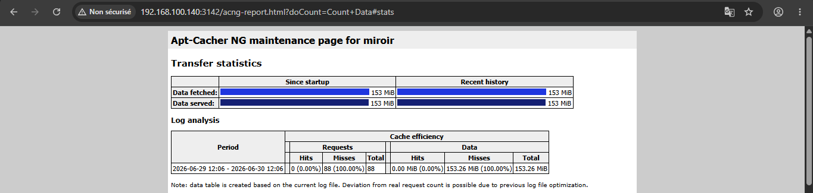
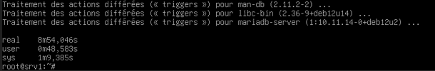
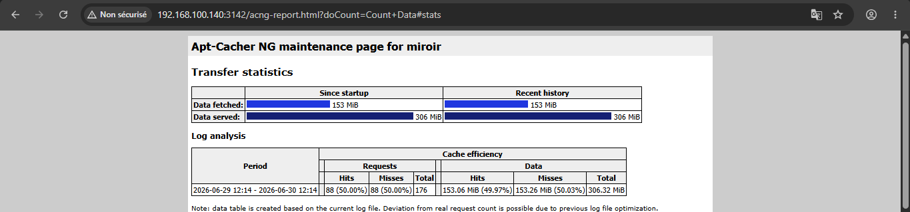
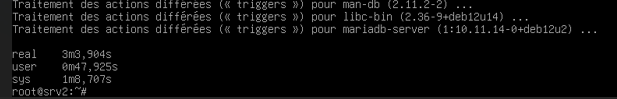

Introduction
Imaginons un parc de 100 machines Debian/Ubuntu, chaque machine fait des mise à jour, install des services. Toutes téléchargent (presque) les mêmes paquets depuis Internet. cela consomme : bande passante, temps, ressources réseau de l’entreprise.
Comme solution, on peut mettre en place une machine (serveur miroir / cache APT) connectée à Internet qui télécharge les mises à jour et les paquets puis les partage aux autres.
Fonctionnement
Un serveur miroir est une solution proxy de mise en cache des paquets. À travers ce proxy, un ensemble d'ordinateurs clients accède indirectement aux dépôts.
Quand un paquet est demandé pour la première fois, il est téléchargé par le proxy et transmis au client tout en conservant une copie en local. Pour toute future demande du même paquet, le proxy ne télécharge pas les paquets mais transmet la copie locale. Ainsi, on économise la bande passante externe et du temps pour les clients.
Nous allons pour la suite utiliser le reseau 192.168.xx.0/24.
+-------+
| SRV01 |
| .100 |----+
+-------+ |
|
+-------+ |
| SRV02 | |
| .100 |----| +---------+ +----------------+
+-------+ | | SRV | +----------+ | INTERNET |
+--+ MIROIR |<--->| PARE-FEU |<---->| \ |
+-------+ | | .100 | +----------+ | DEPOT OFFICIEL |
| SRV01 | | +---------+ +----------------+
| .100 |----+
+-------+ |
|
+-------+ |
| SRV02 | |
| .100 |----+
+-------+Solutions existantes
Plusieurs solutions de mise en cache ou de miroir de dépôts peuvent être mises en place afin de centraliser et mutualiser le téléchargement des paquets.
apt-cacher-ng
apt-cacher-ng est un proxy de cache dédié aux paquets APT. Une machine joue le rôle de serveur intermédiaire et toutes les requêtes de mise à jour des clients passent par elle. Elle télécharge une seule fois les paquets depuis les dépôts officiels, puis les stocke localement. Les autres machines du réseau réutilisent ensuite ce cache.
apt-mirror
Il clone tout le dépôt en local (lourd : 50–200 Go). Utile si le réseau local est coupé d'internet pendant longtemps. Les clients sont ensuite configurés pour utiliser ce miroir interne comme source principale de paquets. Cette approche est plus lourde en termes de stockage et de synchronisation.
Squid
Squid est un proxy réseau généraliste utilisé pour le filtrage et la mise en cache des requêtes HTTP et HTTPS. Il peut également servir à accélérer les mises à jour APT en mettant en cache les paquets téléchargés. Cependant, il n’est pas spécifiquement conçu pour la gestion des dépôts Linux, ce qui le rend moins spécialisé qu’Apt-Cacher-NG
Implementation
Nous allons installer apt-cacher-ng, parce qu'il est legé et moins gourmand en ressources comparativement a apt-miroir. L'installation se fera uniquement sur le serveur miroir.
apt install apt-cacher-ng -y
Une fois l'installation terminée, apt-cacher-ng démarrera automatiquement. Ouvrez et modifiez ensuite le fichier de
configuration de cache-ng situé dans le répertoire /etc/apt-cacher-ng. Les fichiers importants sont acng.conf
et security.conf.
Le fichier /etc/apt-cacher-ng/acng.conf centralise la configuration d'Apt-Cacher-NG. Il permet notamment de définir
le répertoire du cache (CacheDir), le répertoire des journaux (LogDir), le port d'écoute et d'administration
(3142 par défaut), les dépôts pris en charge, la page de statistiques acng-report.html, ainsi que les règles
d'exclusion du cache via la directive DontCache.
Le second fichier, security.conf, permet de définir les identifiants d'accès à la page d'administration
au format AdminAuth: username:password, par exemple AdminAuth: admin:Mir0r@dminS3cr3t, ainsi que les
restrictions d'accès par adresse IP au format allowed: adresse_ip ou allowed: adresse_ip adresse_ip
pour une ou plusieurs adresses IP, et allowed: adresse/masque ou allowed: adresse/masque adresse/masque
pour une ou plusieurs plages.
nous allons, juste initialiser la variables AdminAuth, puis appliquer les modification en demarant le service.
systemctl enable --now apt-cacher-ng
systemctl restart apt-cacher-ngTest de la solution
Pour tester notre solution nous avons, utiliser deux machines. Mais si vous disposez de d'assez d'espace pour creer
plus de vm n’hésitez pas. Sur chacun des vm, il faut creer le fichier /etc/apt/apt.conf.d/00proxy avec
le contenu suivant :
# Remplacer "192.168.100.140" par l'adrresse IP de votre serveur miroir
Acquire::http::Proxy "http://192.168.100.140:3142";Pour vérifier que la solution fonctionne, nous allons nous appuyer sur deux facteurs : la taille des données transférées et le temps d'exécution.
Test sur vm1
Sur la vm1 nous allons executer la commande time apt install -y nginx mariadb-server postgresql redis-server docker.io build-essential.
Puis verifier la taille de donnee téléchargée et le temps écoulé.
time est une commande qui mesure le temps d'exécution d'une autre commande. Exemple de sortie :
- real :le temps total écoulé, c'est celui qui nous intéresse pour la démo.
- user :temps CPU passé dans le code de l'application elle-même.
- sys :temps CPU passé dans les appels système (lecture disque, réseau, etc.)
Taille de donnee téléchargée

Temps mis pour l'execution

Data fetched (153 MiB) correspond a ce que le serveur miroir a téléchargé depuis internet,
Data served (153 MiB) ce qu'il a servi aux clients avec un temps d'execution de 08 minutes, 54,046 secondes.
time apt install -y nginx ..... précédente, est la toute premiere commande exécutée par le
serveur miroir. Il a téléchargé depuis internet 153 MiB (Data fetched). vm1 est la seule ayant demande cette ressources
d'où 153 MiB (Data served, servi a vm1).
Pour avoir le détail (hits/misses), Clique sur le bouton Count Data. Cela analysera le fichier de log et
donnera le détail :
- Hits : requêtes servies depuis le cache (pas de téléchargement internet)
- Misses : requêtes qui ont nécessité un téléchargement depuis internet
- Total : somme des deux
Hits = 0 signifie qu'aucune donne n'a ete servie par le cache.
Test sur vm2
Sur la vm2 nous allons executer la meme commande time apt install -y nginx mariadb-server postgresql redis-server docker.io build-essential.
Taille de donnee téléchargée

Temps mis pour l'execution

Data fetched (153 MiB) n'a pas changee, parce que le serveur n'a rien téléchargé de nouveau.
Data served est passee a 306 MiB. En plus des 153 MiB servi a vm1 lors de la requette
précédente, le serveur miroir a servi 153 MiB a vm2, d'où 153 MiB + 153 MiB. Le temps d'execution reduit a
03 minutes, 3,904 secondes. Le Hits = 88 requêtes servies depuis le cache.
Conclusion
Ce projet a permis de mettre en place et de valider concrètement une solution de cache centralisé pour la gestion des mises à jour APT. La configuration d'apt-cacher-ng sur une machine dédiée, a démontré son efficacité dès les premiers tests : le dashboard de monitoring a confirmé un volume de données servies aux clients, supérieur au volume réellement téléchargé depuis internet, preuve tangible que le cache réduit la consommation de bande passante externe.
Les tests réalisés sur deux machines virtuelles, avec mesure du temps d'exécution via la commande time,
ont permis d'objectiver le gain de performance. La première installation, nécessitant un téléchargement complet
depuis les dépôts officiels, s'est révélée nettement plus lente que la seconde, servie directement depuis
le cache local.